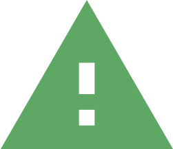
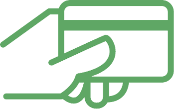

[[formatDate()]]
[[formatTime(time)]]
[[localize('help_title')]]

[[localize('session_expire_title')]]
[[heading]]

[[_getBlockTitle(localize, lang)]]
[[localize('language_select')]]
[[localize('language_payment_desc')]]
v0.0.6 - reload
[[localize('loader_wait')]]
[[progress]][[localize('loader_waitpourcentage')]]
[[title]]
[[localize('login_hub')]]
[[localize('unavailable_title')]]
[[localize('infos_title')]]
[[localize('payment_error_title')]]
[[localize('payment_error_info')]]
[[localize('payment_error_info_bis')]]
[[localize('printer_error_title')]]
[[localize('payment_title')]]

[[localize('payment_free_title')]]
[[localize('payment_success_title')]]
[[_getPrintStateLabel(localize, printState)]]
[[localize('payment_ticket_title')]]
[[localize('payment_ticket_desc')]]
[[localize('payment_partial_title')]]
[[_getPrintStateLabel(localize, printState)]]
[[localize('payment_ticket_partial_title')]]
[[localize('payment_ticket_partial_desc')]]